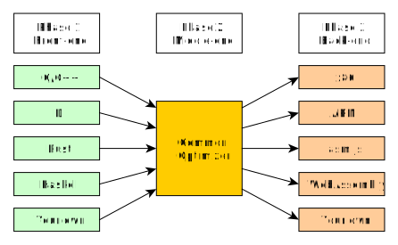
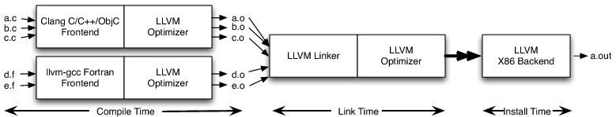

LLVM-based JIT Compilers
|
Stefan Gränitz @ C++ Meetup, Berlin Tuesday, March 15th 2016 |
|
|
What is a...
JIT Compiler?
What is a JIT Compiler?
Compiler
- → code transformations to bridge abstraction gap between hardware and software
- → typically from high-level source code to
low-level machine code
Just-In-Time
- → as close as possible to its actual execution
What people mean with JIT Compiler?
Whenever a program, while running, creates and runs some new executable code which was not part of the program when it was stored on disk, it’s a JIT. Eli Bendersky
Widely used as synonyms:
- JIT = Just-in-Time = Runtime Compiler
- AOT = Ahead-of-Time = Static Compiler
What is...
LLVM?
What is LLVM?
- → compiler infrastructure:
intermediate representation and tools to manipulate it - → started in 2003 by Chris Lattner (University of Illinois) as Low Level Virtual Machine
- → today developed by the LLVM Developer Group
Why is that interesting for C++ devs?
- → huge code base:
open-source, modern C++ - → sophisticated requirements:
modularity, portability, efficiency - → components that you might like to use
- → great development tools
… and a good craftsman should know his tools!
Slight detour to...
Compiler
Construction


What is the goal?
 →
→

Native code generation step by step


Compilation step by step


Three-Phase-Design

Challenges for a Runtime Compiler?
- → compile to machine code directly
- → provide memory for executable code
- → link in new code at runtime
- → manage dynamic allocations and lifetime
JIT Basics
The 20000ft overview


Engines
- → "legacy JIT" removed with 3.6
- → MCJIT introduced with 3.4
- → ORC introdcued with 3.7
MCJIT (Machine Code JIT)
- → monolithic
- → based on MC API's (CPU instruction-set tools)
- → strict module-based compilation
- → single RuntimeDyld for all linking jobs
- → manual finialization: for relocations & exec switches
ORC
- → set of components: layers and utils
- → uses MC layer & handles module sets
- → re-enables function-at-a-time "lazy" jitting
- → one RTDyldMemoryManager per module
- → on-demand finalization
LLVM IR
Example
; ModuleID = 'test'
target datalayout = "e-m:o-i64:64-f80:128-n8:16:32:64-S128"
; Declare the string constant as a global constant.
@.str = private unnamed_addr constant [13 x i8] c"hello world\0A\00"
; External declaration of the puts function
declare i32 @puts(i8* nocapture) nounwind
; Definition of main function
define i32 @main() { ; i32()*
entry:
; Convert [13 x i8]* to i8 *...
%cast210 = getelementptr [13 x i8], [13 x i8]* @.str, i64 0, i64 0
; Call puts function to write out the string to stdout.
call i32 @puts(i8* %cast210)
ret i32 0
}
; Named metadata
!0 = !{i32 42, null, !"string"}
!foo = !{!0}
Properties
- → Static Single Assignment (SSA)
- → type safety, low-level operations, flexibility
- → source language neutral
- → not platform specific
- → http://llvm.org/docs/LangRef.html
Representations
- → in-memory compiler IR
- → on-disk bitcode representation
- → human readable text form
Restrictions
- → designed for compiler optimizations
- → neither fully portable nor fully stable
How can I …?
How can I generate IR?
→ let's get to the code!How can I inspect my IR?
llvm::Module* myModule = ...
myModule->dump();
llvm::Value* myValue = ...
myValue->dump();
How can I call external code?
// declare function
Type* retTy = Type::getInt8PtrTy(Ctx);
ArrayRef<Type*> argTys = { Type::getInt64Ty(Ctx) };
FunctionType* mallocSig = FunctionType::get(retTy, argTys, false);
Value* mallocFn = M->getOrInsertFunction("malloc", mallocSig);
// compile call to allocate double
Type* varTy = Type::getDoubleTy(Ctx);
Constant* dataSize = ConstantExpr::getSizeOf(varTy);
CallInst* mallocCall = CallInst::Create(mallocFn, dataSize, "void_ptr");
Builder.GetInsertBlock()->getInstList().push_back(mallocCall);
Value* voidPtr = mallocCall;
Value* typedPtr = Builder.CreateBitCast(voidPtr, varTy->getPointerTo(), "double_ptr");
-
→ plus a symbol resolver in
SimpleOrcJit:
http://.../JitFromScratch/blob/example/malloc/SimpleOrcJit.h#L27
How can I call my own code?
extern "C" void* myAlloc(long long bytes)
{
return malloc(bytes);
}
...
compiler->addGlobalMapping("myAlloc", (void*)myAlloc);
...
Value* mallocFn = M->getOrInsertFunction("myAlloc", mallocSig);
...
-
→ plus a new layer to resolve your symbol:
http://.../example/own-externals/SimpleOrcJit.h#L75
How can I define my own data types?
std::vector<Type*> memberTys = {
Type::getInt32Ty(Ctx),
Type::getDoubleTy(Ctx)
};
StructType* myStructTy = StructType::create(Ctx, memberTys, "myStructTy");
How can I access fields?
// write init value to struct member
Value* doublePtr = Builder.CreateStructGEP(myStructTy, typedPtr, 1, "member_ptr");
Value* doubleInitVal = ConstantFP::get(Type::getDoubleTy(Ctx), 3.1415);
Builder.CreateStore(doubleInitVal, doublePtr);
Getting Started
Setup LLVM
-
→ Build from source with CMake:
http://llvm.org/docs/CMake.html
http://clang.llvm.org/get_started.html -
→ Pre-built binaries:
http://llvm.org/releases/download.html -
→ Homebrew on Mac:
$ brew install llvm --with-clang --with-asan --with-libcxx --HEAD -
→ Scoop on Windows:
$ scoop install llvm
Command Line Tips
clang++ `llvm-config --libs --system-libs`
-D__STDC_CONSTANT_MACROS
-D__STDC_LIMIT_MACROS
-lz -Wall -std=c++14
-o myExec mySource.cpp
CMake Tips
- →
find_package(LLVM) - →
llvm_map_components_to_libnames(LLVM_LIBS
core orcjit x86asmparser x86codegen) - → some quirks for cross-platform details
https://github.com/weliveindetail/StatefulJit/blob/master/CMakeLists.txt
Checkout the tools
See the IR that clang generates from C++- → browser: http://ellcc.org/demo/index.cgi
-
→ bash:
$ clang++ -S -emit-llvm foo.cpp
Run your IR to see what it does:
-
→ bash:
$ lli foo.ll - ( → browser: http://kripken.github.io/llvm.js/demo.html )
Explore code generation
http://github.com/weliveindetail/JitFromScratch- → get familiar with the API for IR codegen
- → general approach is "see how clang does it"
- → few answers on stackoverflow
- → can be challenging
Learn basic front-end construction
http://llvm.org/docs/tutorial/index.html- → guided conventional C++ coding
- → great starting point for language experiments
- → focus is on functionality, not on good style!
- → easy but time-consuming
Learn how to write a pass
http://llvm.org/docs/WritingAnLLVMPass.html- → guided C++ coding
- → requires some compiler and IR insight
- → useful for optimization or instrumentation
- → advanced
Keep in mind
- → it's a great infrastructure, but it's still not trivial
- → IR spec changes over time, e.g. llvm.js is still on 3.2 (2012)
- → C++ has no standard ABI, take care when linking against other compiler's code
- → turn off exceptions and RTTI
Conceptual Advantages
Reusability is the key
- → extremely reuse-friendly / hackable
due to modular design and permissive license - → static compilers and runtime compilers in one framework
- → large active community:
http://lists.llvm.org/pipermail/llvm-dev/
http://lists.llvm.org/pipermail/cfe-dev/
Modular Optimizer
- → IR is the only interface
- → pipeline of distinct optimization passes
- → pass manager for dependency resolution and scheduling
- → http://www.aosabook.org/en/llvm.html
Link-Time Optimization
- → no expensive serialization (naturally)
- → across different source languages
Install-Time Optimization
- → delay codegen to installation (still AOT)
- → instruction selection & scheduling for specific machine
Unit Testing the Optimizer
With textual IR & modular optimizer:- → unit tests for single optimization passes!
- → e.g. make sure constant folding actually performed
- → typical problem with source code files as input: front-ends do constant folding too!
Why LLVM? Why now?
- → people build compilers since 1952
- → from the scientific point of view there is nothing new
In the right spot at the right time!
- → native programming is back!
- → many new architectures for mobile processors and GPUs
- → instead of getting clocked faster, instruction sets are getting weirder
- → high demand for compiler-based build tools
Learning from LLVM
None of the subsystems in LLVM are really good until they have been rewritten at least once.
After all, the goal isn't to be perfect, it is to keep getting better over time. Chris Lattner
LLVM Coding Standards
http://llvm.org/docs/CodingStandards.html- → good coverage, great reasoning
- → few style conventions like naming and bracing
- → "only pay for what you use" compatible
Hand-rolled RTTI
http://llvm.org/docs/HowToSetUpLLVMStyleRTTI.html
static bool isLoopInvariant(const Value *V, const Loop *L) {
if (isa<Constant>(V) || isa<Argument>(V) || isa<GlobalValue>(V))
return true;
// Otherwise, it must be an instruction...
return !L->contains(cast<Instruction>(V)->getParent());
}
- → no implicit limitations
- → more efficient and flexible then built-in RTTI
- → fully explicit — use only where necessary
ilist<T> — an intrusive doubly-linked list
http://llvm.org/docs/ProgrammersManual.html#llvm-adt-ilist-h
- → efficiently stores polymorphic objects
- → used for Instructions, BasicBlocks, etc.
- → minimum-overhead (never touch the heap)
- → no invalidation on modification & constant-time splice
- → STL-compliant & recently cleaned up
Bugpoint
http://llvm.org/docs/Bugpoint.html- → automatically reduces the amount of code necessary to reproduce a bug
- → trade off programmer time for computer time
Projects
Clang — a compiler
http://clang.llvm.org/- → LLVM reference project
- → self-hosting since February, 2nd 2010
- → actively developed by Apple, Google, Microsoft, ARM, Sony, Intel, AMD, etc. & the community
- → a great playground, also for the C++ standards committee

Cling — an interpreter
https://root.cern.ch/cling-brief- → replaces old CINT command line interpreter
- → rapid development tool for high energy physicists
- → let's see it in action!
AddressSanitizer — a development tool
https://github.com/google/sanitizers/wiki/AddressSanitizer- → clang compiler flag
-fsanitize=address - → detects dangling pointer dereference, stack buffer overflow, non-deterministic initialization, etc.
- → essentially implemented as LLVM ("optimization") pass
- → very low overhead: typically ~2x

MapD — a visualization tool for big data
https://devblogs.nvidia.com/parallelforall/mapd-massive-throughput-database-queries-llvm-gpus/- → JIT compiles database queries for runtime efficiency
- → code generation time under 30ms
- → LLVM IR to target specific CPU and/or GPU
- → uses system runtime information as compile-time input for queries
Souper — an automatic optimizer
https://github.com/google/souper- → theorem solver to identify peephole optimizations
- → mostly eliminating dead code by tracking value ranges
- → e.g. save 4 bytes in some bitwise operation — not much but happens around 21k times when compiling LLVM
- → research targets systems that learn optimization automatically
Emscripten — a source-to-source compiler
https://github.com/kripken/emscripten- → compiles C/C++ to asm.js
- → examples: Unreal Engine 3, SQLite, Lua VM
- → "near-native" speed, but very depending on use-case and client setup
- → note: code size grows rapidly — less efficient transfer, parsing and locality of reference
Binaryen —
the WebAssembly toolchain
https://github.com/WebAssembly/binaryen
- → wasm: portable, size- and load-time-efficient format suitable for compilation to the web
- → binaryen: parse & compile to & from wasm, interprete and polyfill (fallback to asm.js)
- → implemented as virtual Instruction Set Architecture directly in the upstream LLVM repo
- → initial support in clang already merged back
- → plans are to ship MVP before end of 2016!
Projucer — a live coding environment
https://youtu.be/imkVkRg-geI?t=123- → compiles JUCE C++ components on-the-fly and links them into a running executable
- → rapid development of C++ based UI

StatefulJIT — a research project
https://github.com/weliveindetail/StatefulJit- → experimental implementation of a minimalistic language
- → playground to evaluate compiler-based techniques for dynamic software updating
- → current focus is runtime state transfer for complex data types
Others..
- LDC: LLVM D Compiler (alpha-state)
- Rust: systems programming language
- Swift: Apple's attempt to replace Objective-C
-
GHC:
Glasgow Haskell Compiler
- FAUST: Functional Audio Stream
- Rubinius: high-performance env. for running Ruby code
-
LLILC:
aims to compile .NET's CoreCLR to LLVM IR
- Vuo: Visual programming environment
- and so on...
Thanks!
Questions?
https://github.com/weliveindetail/JitFromScratch https://github.com/weliveindetail/StatefulJit